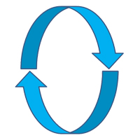

YSRec
is a program for an easiest way to download/record
YouTube
live streams in 2 clicks.
TesterTV
is a website that allows anyone to watch german television online. The use is free, legal, without registration and open source.
The channel streams used are taken from the official websites and are available to everyone.
The obvious advantages are the following:
- speed
- all channels are on one page
- no need to install apps when using smartphones
- you do not need a TV-set
The code is based on the m3u8-player. I built a web page from it and modified it so that you can watch the channels.
GUIllery-DL is a simple GUI for downloading media files from various sites.
qrcp_WinGUI is a simple GUI for "qrcp" to transfer files over Wi-Fi between your PC and mobile device by scanning a QR code. It's not necessary to install program or app. It's works without internet connection.
Audbook Creator
(Support was stopped) Audbook Creator
is the simple program that will help you transform any text into an audio file/book. To create audio files, a text will be sent to the Yandex search engine and converted. The program supports 4 languages:
- English
- Russian
- Ukrainian
- Turkish
youtubeTRIMtool
(Support was stopped)
youtubeTRIMtool
is a GUI for youtube-dl and ffmpeg to make use of the following functions:
- download and trim videos from youtube (conversion function is not available yet)
- download, trim and convert audios from youtube
- download playlists (audio / video)
- download live streams from youtube
TPDNE Downloader
(Support was stopped)TPDNE Downloader loads the necessary number of photos generated by the web page "This Person Does Not Exist". These photos can be used e.g. for learning neural networks or for data protection purposes.
